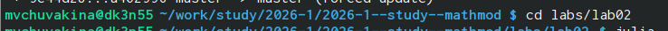
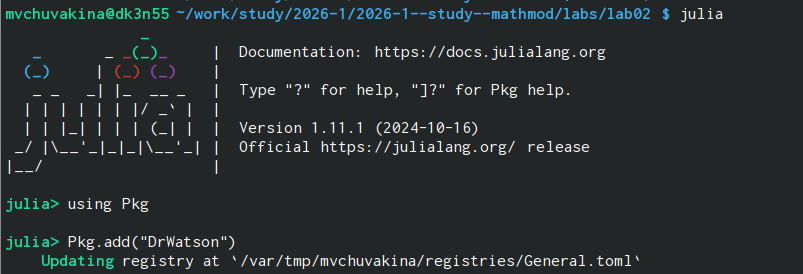
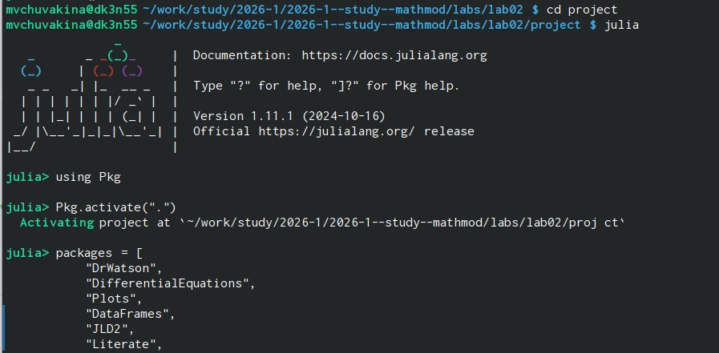
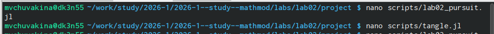
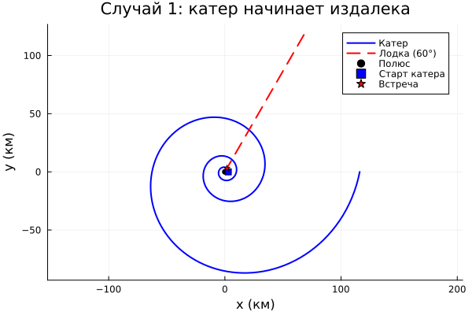
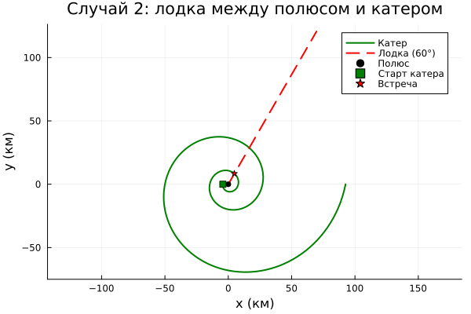
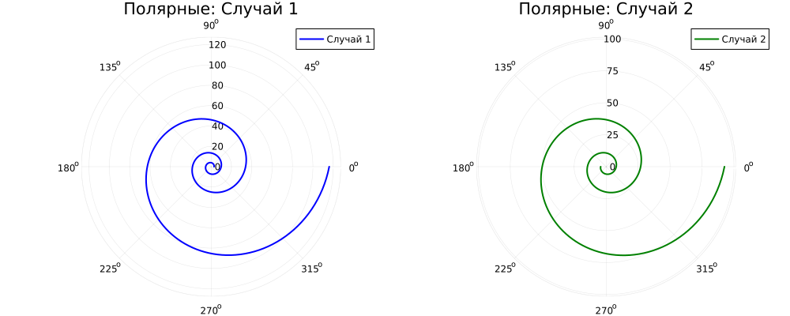

Математическое моделирование задачи преследования
2 марта 2026
Разработать математическую модель задачи преследования, реализовать численное решение на Julia и оформить отчёт с использованием современных инструментов (DrWatson, Literate, Quarto).
Изучить задачу преследования браконьеров береговой охраной
Вывести дифференциальное уравнение траектории катера
Рассчитать радиусы перехода для двух случаев расположения катера
Реализовать численное решение на Julia
Построить траектории движения катера и лодки
Найти точки встречи для заданного направления лодки
Оформить отчёт в формате Quarto
Из таблицы вариантов:
Начальное расстояние между катером и лодкой: k = 17.9 км
Отношение скоростей: n = 5.2 (катер в 5.2 раза быстрее лодки)
Введём полярную систему координат с центром (полюсом) в точке обнаружения лодки. Полярную ось направим через точку начального расположения катера.
Первый этап (прямолинейное движение). Катер движется прямо, пока не окажется на том же расстоянии от полюса, что и лодка.
Для двух возможных начальных положений получаем радиусы перехода:
x1=kn+1=17.95.2+1=17.96.2=2.887 кмx1=n+1k=5.2+117.9=6.217.9=2.887 км
x2=kn−1=17.95.2−1=17.94.2=4.262 кмx2=n−1k=5.2−117.9=4.217.9=4.262 км
Второй этап (спиральное движение). После выхода на нужный радиус катер начинает двигаться так, чтобы его радиальная скорость равнялась скорости лодки \(v\).
Вывод дифференциального уравнения:
Скорость катера раскладывается на две составляющие:
Радиальная скорость: \(\frac{dr}{dt} = v\) (должна равняться скорости лодки)
Тангенциальная скорость: \(r\frac{d\theta}{dt} = v_\tau\)
Полная скорость катера: \(v_k = n \cdot v\)
По теореме Пифагора:
(nv)2=v2+vτ2(nv)2=v2+vτ2
Окончательное уравнение:
drdθ=r5.103dθdr=5.103r
Переходим в нужную директорию

Инициализируем проект.

Загрузим необходимые пакеты.

Создадим необходимые скрипты.

cd ~/work/study/2026-1/2026-1--study--mathmod/labs/lab02/project
julia --project=. scripts/lab02_pursuit.jlЧисленные результаты
Начальный радиус спирали: 2.89 км
Конечный радиус: 116.06 км
Координаты точки встречи с лодкой (φ=60°): (X₁, Y₁) км
Начальный радиус спирали: 4.26 км
Конечный радиус: 92.57 км
Координаты точки встречи с лодкой (φ=60°): (X₂, Y₂) км
Графики



Анализ результатов
Полученное дифференциальное уравнение \(\frac{dr}{d\theta} = \frac{r}{\sqrt{n^2-1}}\) имеет аналитическое решение:
r(θ)=r0eθ/n2−1r(θ)=r0eθ/n2−1
что подтверждается численными расчётами — траектория является логарифмической спиралью.
Для случая 1 катер проходит большее расстояние (радиус увеличивается до 116 км), но благодаря спиральной траектории гарантированно встречает лодку при любом направлении её движения.
Для случая 2 траектория более «крутая», встреча происходит быстрее и на меньшем удалении от полюса.
Точка встречи зависит от направления движения лодки. В работе для определённости выбрано направление \(\varphi = 60^\circ\).
Генерация отчёта:
julia --project=. scripts/tangle.jl scripts/lab02_pursuit.jl
cd ../report
make pdf
make docx
cd ~/work/study/2026-1/2026-1--study--mathmod
git add .
git commit -m "feat(lab02): complete laboratory work with all results"
git push origin lab02
git push gitverse lab02В ходе выполнения лабораторной работы: